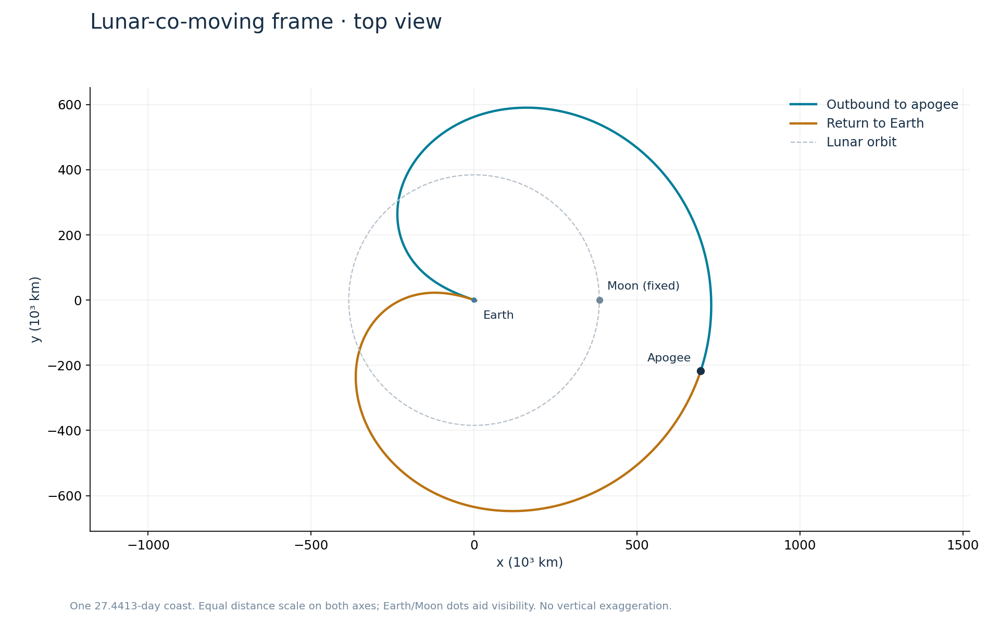
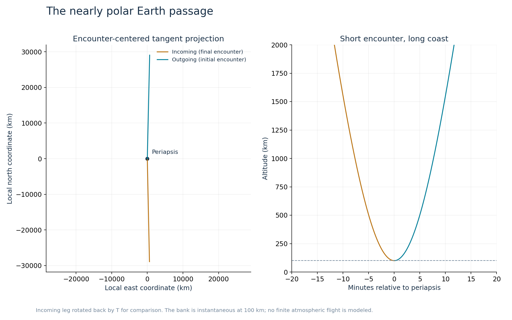

A polar pass.
A return in 27.44 days.
A near-polar trajectory that returns to Earth's atmosphere, using an eastward aerodynamic turn to extract energy from planetary rotation. One specific numerical solution, open for inspection.
Explore the orbit
Actual trajectory samples · no illustrative ellipseAmber: net Δv, length magnified ×20. Vectors are fixed at the return bank.
The viewer plays one coast and stops at the return. It does not simulate stability, atmospheric flight, or propellant collection. The Earth-pass preset pauses at the return bank; zoom in to distinguish incoming and outgoing directions.
Polar describes the plane,
not the long axis.
The orbit is highly eccentric. Looking down the lunar orbital normal compresses its north–south motion and can make a polar orbit look nearly flat. Switch to Side XZ or rotate the 3D scene to reveal that dimension.
At the atmospheric bank, inclination changes from 91.134° to 88.772°: slightly retrograde to slightly prograde, both nearly polar. Over the coast the instantaneous inclination spans approximately 81.53°–91.16°.
The nominal resonance is near 1:1, not exactly one lunar month. The inertial orientation advances by about 1.577° beyond a full revolution each return. Lunar-frame closure is not a fixed ellipse in inertial space.




An eastward turn.
Not an engine burn.
The spacecraft moves north at about 11.03 km/s, while the atmosphere moves east at 446 m/s at the pass. Lift and drag are resolved relative to that tilted airflow—not relative to geographic north and east.
Drag contributes −18.734 m/s northward; lift contributes +19.028 m/s northward. The small positive net northward change is their sum, not negative drag. Every segment of the prescribed velocity-space turn has positive drag.
The bank draws 214.85 kJ/kg from Earth's rotation and dissipates 207.01 kJ/kg relative to the atmosphere. Its net orbital-energy gain of 7.84 kJ/kg balances the preceding coast's loss.
- Eastward
- +481.452 m/s
- Northward
- +0.294 m/s
- Radially outward
- 0 m/s
These are specific impulses (N·s/kg), not force in newtons. Duration, vehicle mass, and finite-flight loading are not specified.

One orbit.
Enough detail to verify it.
The technical note specifies the equations, units, six-state initial condition, event detection, closing maneuver, force decomposition, and numerical residuals. The standalone Python script does not search for or optimize an orbit.
The model is circular restricted three-body gravity with aligned spin. Collection yield, Sun, oblateness, finite atmospheric flight, and physical vehicle performance are not demonstrated here. A close lunar flyby is not needed for the proposed atmospheric-collection application.